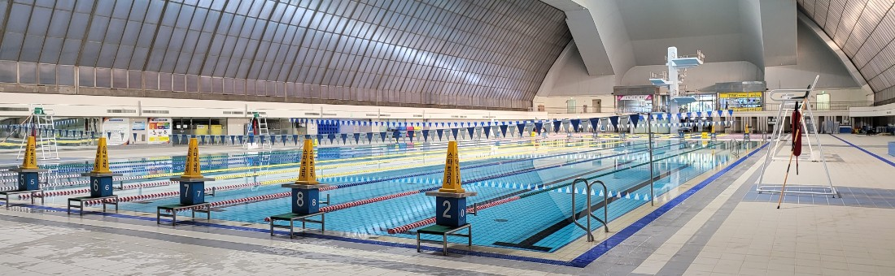

올림픽수영장

올림픽수영장은 88서울올림픽수영경기가 열린 곳으로, 국제 규격의 50m 레인과 깨끗한 수질, 우수한 강사진들의 열정적인 지도로 대한민국을 대표하는 생활체육의 장으로 자리매김하고 있습니다.리모델링 공사를 통하여 수영 외에도 헬스, 스피닝바이크, 가요교실 등 다양한 스포츠, 문화교실 프로그램을 운영하고 있습니다. 또한 스포츠용품점, 편의점, 식당, 잡화점 등 고객편의시설을 확충하여 여러분께서 올림픽수영장을 편리하게 이용하실 수 있도록 노력하고 있습니다.